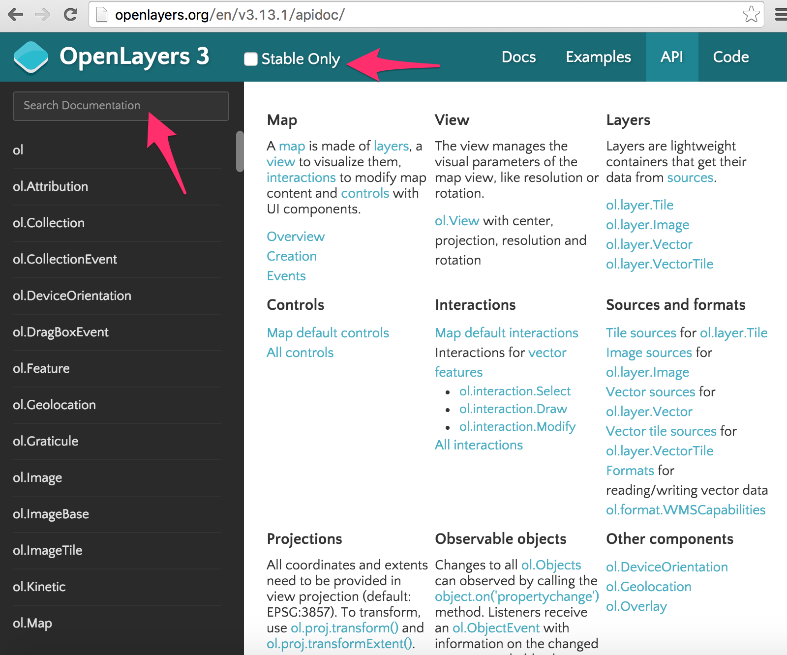
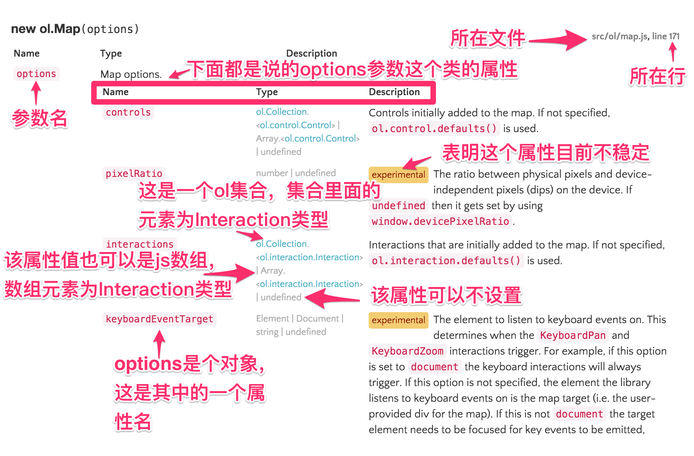

看懂及使用API
API的重要性自然不必多言，对于一个快速开发中的开源项目，更是如此，每一个小版本之间都可能有些许变化。所以在更新版本后，如果遇到API方法不存在或者功能不正确，则需要优先核对官网API文档。本教程也不是一个API翻译教程，毕竟授之以鱼，不如授之以渔，掌握方式方法是关键。
API文档入口
首先打开OpenLayers官网 http://openlayers.org/，然后参见下图箭头所指向的地方：

进入后可以看到页面左边为搜索栏和一个类列表，上方为工具条，右边为OpenLayers 3组成部分的介绍，都是相关的类和一些简介。 
Stable Only复选框选中后，在API文档里面显示的信息就只会是功能已经稳定的参数，接口。在查找功能或者最新特性时，建议不要勾选。
右边页面显示了地图组成的介绍，排在第一排的是Map、View、Layers，第二排第三排依次列出了其他的组成部分。有简单的介绍，及对应的包和类。
查找
左边的列表会根据搜索栏的内容进行过滤。大家可以尝试一下，这里能搜索包名，类名，方法名和事件名。包名比如ol.layer，ol.source等，方法名比如setCenter，setZoom等，类名比如View，Map等，事件名比如`change:layers。但目前还不支持文档里面的内容的文本搜索。
API文档介绍
此处以ol.Map类的API文档为例进行说明。在搜索栏输入ol.Map，就可以看到列表中，第一项就是它了，点击，就可以在右边看到文档。从上向下，共分为三部分：
- 类介绍，主要介绍该类可以干嘛，建议仔细阅读，只有搞清楚这个，才不至于找出对象。
- 构造参数、事件及继承关系，不用说，这是非常重要的。
- 方法，该类提供的各种方法。
由此可见OpenLayers 3的API文档是比较好的，包含的内容详实(ol3的API文档是从代码的注释中通过工具提取生产的，所以时刻能保持更新，且完全符合JSDoc规范，文档和代码完全匹配)。介绍部分是否能看懂，因人而异，当了解的越多，就越容易看明白。因为介绍部分只是当前类的一些简要说明，可能需要结合到其他的知识才能更容易明白。对于构造参数而言，采用的是JSDoc规范，在此仍然对其格式进行说明，参见下面图解： 
文件和行号标注都是可以点击的，能打开对应的源码。注意参数是对象的情况，以{key1:value1, key2:value2}这样的方式设置，对于参数类型Type的说明，符号|表示或者的意思，便于传递各种各样的参数，对开发者友好。对于容器类型，都会使用<>来表示容器类的元素的类型。对于OpenLayers的类型，都可以通过点击查看，其余的则为JavaScript的原生类型和DOM类。参数的说明没有什么固定的规范格式，都比较详细，也容易看的明白。
除了参数之外，在OpenLayers 3中还大量使用了事件，主要是通过观察者模式来确保对象改变时，能触发相应的操作。在API文档中，明确标注了各个类的事件，以及说明什么时候触发该事件。Fires:之后列出的就是这些事件，比如ol.Map就有很多事件，click、dbclick、singleclick、moveend等等。这些事件对于开发者来说非常重要，所以要多加留意。至于什么时候使用，如何使用，后续会慢慢介绍。
事件之后还有Subclasses，表明当前类具有哪些子类，以及Extends，表明当前类的父类是什么。不要小瞧这个说明，因为在面向对象编程范式中，所有能用父类的地方，都可以用子类。比如ol.Map的构造参数options可以设置layers属性，它的值是ol.layer.Base类型元素的集合，那么这个集合中，就可以用ol.layer.Base的子类ol.layer.Group和ol.layer.Layer，以此类推，也可以用这两个类的子类ol.layer.Image、ol.layer.Tile、ol.layer.Vector等。这样我们就知道具体哪些参数能用哪些类了。
类的每一个方法的说明和类的构造函数说明类似，有所在的文件及行号，以及参数的说明，格式也是一样的，为此不再累述。